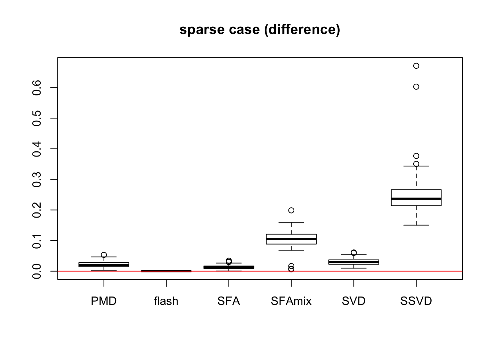

Last updated: 2018-01-10
Code version: fcb28a4
flash.wrapper = function(Y_data){
# missindex is a matirx with 3 column here: i j x
# Y has miss value already
Y = Y_data$Y
L_true = Y_data$L_true
F_true = Y_data$F_true
E = Y_data$E
N = dim(Y)[1]
P = dim(Y)[2]
data = flashr2::flash_set_data(Y)
g_flash = flashr2::flash_r1(data,verbose=F)
Y_hat = g_flash$EL %*% t(g_flash$EF)
RMSE = sqrt(mean(( Y - Y_hat - E )^2 ))/sqrt(mean(( Y - E )^2 ))
return(RMSE)
}
#here I use SVD instead of KSVD.
SVD.wrapper = function(Y_data){
Y = Y_data$Y
L_true = Y_data$L_true
F_true = Y_data$F_true
E = Y_data$E
N = dim(Y)[1]
P = dim(Y)[2]
gsvd = svd(Y)
Y_hat = gsvd$d[1] * (gsvd$u[,1] %*% t(gsvd$v[,1]))
RMSE = sqrt(mean(( Y - Y_hat - E )^2 ))/sqrt(mean(( Y - E )^2 ))
return(RMSE)
}
SSVD.wrapper = function(Y_data){
Y = Y_data$Y
L_true = Y_data$L_true
F_true = Y_data$F_true
E = Y_data$E
N = dim(Y)[1]
P = dim(Y)[2]
gssvd = ssvd::ssvd(Y,method = "method")
Y_hat = gssvd$d * (gssvd$u %*% t(gssvd$v))
RMSE = sqrt(mean(( Y - Y_hat - E )^2 ))/sqrt(mean(( Y - E )^2 ))
return(RMSE)
}library(PMA)
library(flashr2)
library(ssvd)
source("~/HG/flash/data/simulations/rankone/MSE/Rfunction.R")
L_se = c( 0.25, 0.5, 1, 2, 4)
L_pi = c(1, 1,1,1,1)
L_pi = L_pi / sum(L_pi)
N = 200
P = 300
# Data = datamaker(N,P,L_pi,L_se,0.7,c(1),c(1),1,sqrt(16))
Data = datamaker(N,P,L_pi,L_se,0.1,c(1),c(1),1,sqrt(1))
RMSE = rep(NA,6)
RMSE[1] = PMA.wrapper(Y_data)
RMSE[2] = flash.wrapper(Y_data)
RMSE[3] = SFA.wrapper(Y_data, K = 1)
RMSE[4] = SFAmix.wrapper(Y_data,K = 1)
RMSE[5] = SVD.wrapper(Y_data)
RMSE[6] = SSVD.wrapper(Y_data)
saveRDS(result, "./output.rds")\[RMSE =\frac{ \sqrt{(Y-\hat{Y} - E )^2}}{\sqrt{(Y - E )^2}}\]
#!/bin/bash
#SBATCH --job-name=arrayJob
#SBATCH --output=/home/weidong/HG/flash/data/simulations/rankone/MSE/median/outlog/arrayJob_%A_%a.out
#SBATCH --error=/home/weidong/HG/flash/data/simulations/rankone/MSE/median/outlog/arrayJob_%A_%a.err
#SBATCH --array=1-100
#SBATCH --time=02:00:00
#SBATCH --partition=mstephens
#SBATCH --ntasks=1
#SBATCH --mem-per-cpu=2000
######################
# Begin work section #
######################
# Print this sub-job's task ID
cd /home/weidong/HG/flash/data/simulations/rankone/MSE/median
mkdir test${SLURM_ARRAY_TASK_ID}
cd test${SLURM_ARRAY_TASK_ID}
Rscript --verbose /home/weidong/HG/flash/data/simulations/rankone/MSE/median/run.Rsbatch Jobs.sbatchT = 100
results = matrix(NA,ncol = 6, nrow = T)
for(i in 1:T){
test_folder = paste("test", i, sep = "")
# out_folder = "NBSFAout"
out_file = "output.rds"
file_name = file.path(test_folder,out_file)
results[i,] = try(readRDS(file_name))
}sparse_res = readRDS("../data/simulation/rankone/RMSE/result_sparse.rds")
colnames(sparse_res) = c("PMD","flash","SFA","SFAmix","SVD","SSVD")
sparse_diff = sparse_res - sparse_res[,2]
boxplot(sparse_res,main = "sparse case")boxplot(sparse_diff,main = "sparse case (difference)")
abline(a = 0,b = 0,col= "red")sparse_res = readRDS("../data/simulation/rankone/RMSE/result_itermediate.rds")
colnames(sparse_res) = c("PMD","flash","SFA","SFAmix","SVD","SSVD")
sparse_diff = sparse_res - sparse_res[,2]
boxplot(sparse_res,main = "intermediate sparse case")boxplot(sparse_diff,main = "sparse case (difference)")
abline(a = 0,b = 0,col= "red")
sessionInfo()R version 3.3.0 (2016-05-03)
Platform: x86_64-apple-darwin13.4.0 (64-bit)
Running under: OS X 10.13.2 (unknown)
locale:
[1] en_US.UTF-8/en_US.UTF-8/en_US.UTF-8/C/en_US.UTF-8/en_US.UTF-8
attached base packages:
[1] stats graphics grDevices utils datasets methods base
other attached packages:
[1] flashr2_0.4-0 softImpute_1.4 PMA_1.0.9 impute_1.48.0
[5] plyr_1.8.4 denoiseR_1.0 Matrix_1.2-11 R.matlab_3.6.1
[9] cowplot_0.8.0 ggplot2_2.2.1 ashr_2.2-3 ebnm_0.1-7
[13] MASS_7.3-47 workflowr_0.4.0 rmarkdown_1.6
loaded via a namespace (and not attached):
[1] lattice_0.20-35 Rmosek_7.1.2 colorspace_1.3-2
[4] htmltools_0.3.6 yaml_2.1.14 rlang_0.1.2
[7] R.oo_1.21.0 withr_2.0.0 R.utils_2.5.0
[10] REBayes_0.85 foreach_1.4.4 stringr_1.2.0
[13] munsell_0.4.3 gtable_0.2.0 R.methodsS3_1.7.1
[16] devtools_1.13.3 codetools_0.2-15 leaps_3.0
[19] memoise_1.1.0 evaluate_0.10.1 knitr_1.17
[22] pscl_1.5.2 doParallel_1.0.11 irlba_2.2.1
[25] parallel_3.3.0 curl_2.8.1 Rcpp_0.12.14
[28] flashClust_1.01-2 scales_0.4.1 backports_1.1.0
[31] scatterplot3d_0.3-40 truncnorm_1.0-7 gridExtra_2.3
[34] digest_0.6.12 stringi_1.1.5 grid_3.3.0
[37] rprojroot_1.2 tools_3.3.0 magrittr_1.5
[40] lazyeval_0.2.0 tibble_1.3.3 cluster_2.0.6
[43] FactoMineR_1.36 SQUAREM_2017.10-1 assertthat_0.2.0
[46] httr_1.3.0 rstudioapi_0.6 iterators_1.0.9
[49] R6_2.2.2 git2r_0.19.0 This R Markdown site was created with workflowr